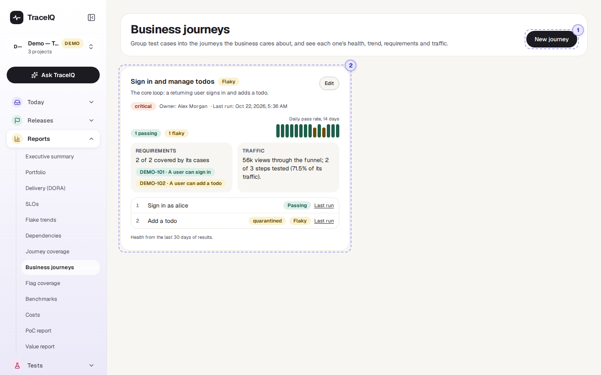
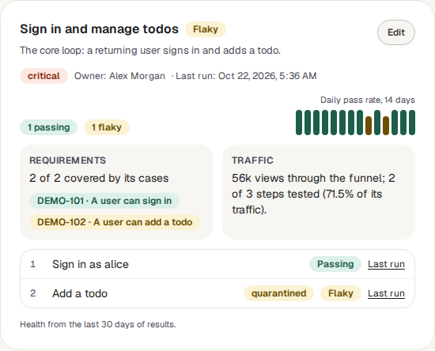
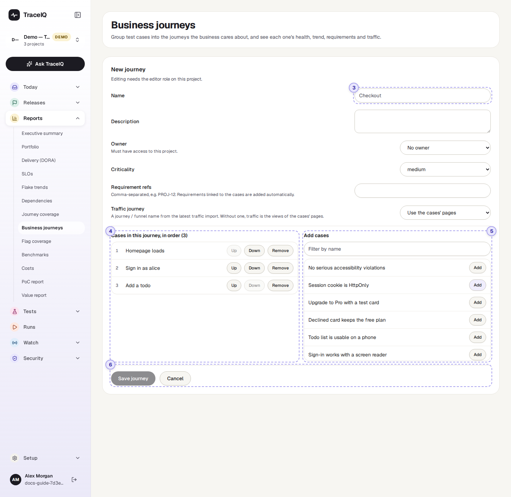
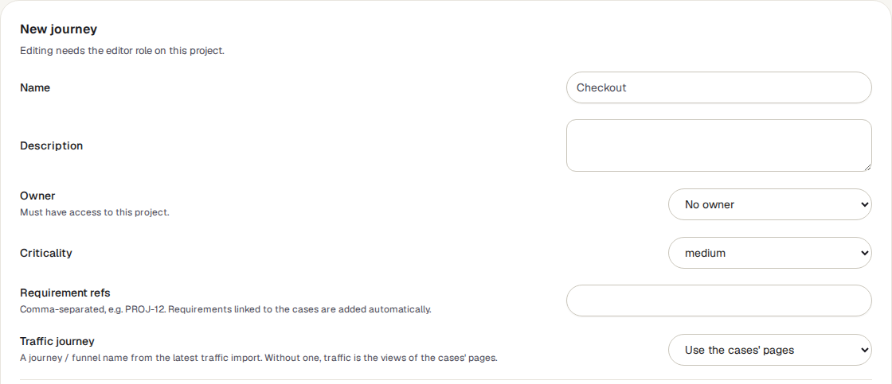
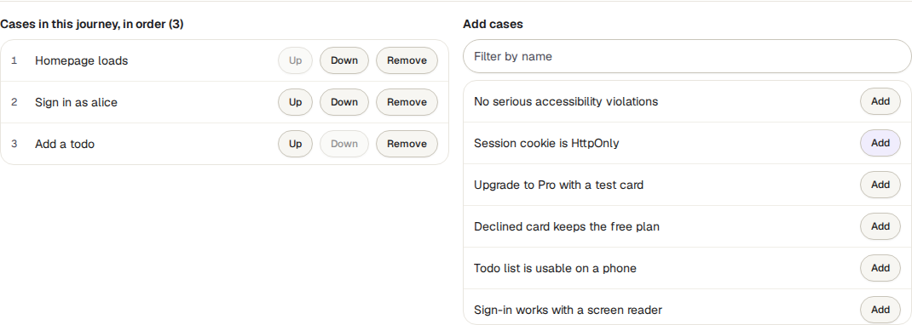

Business journeys
A journey is something a customer does from start to finish, such as "Checkout" or "Sign up". You choose the tests that together check that journey, and this page shows how the journey as a whole is doing: healthy, failing or unreliable, plus its trend, its requirements and how much real traffic goes through it.
What it is for
Business journeys answers "Can our customers still do the things that matter most?" Test results are usually listed one test at a time, which is hard to read if you think in terms of what the business sells. Here, a handful of tests become one card called, say, Checkout, with one verdict.
Product owners
See at a glance whether the journeys you are responsible for work, without reading test names.
Testers
Group existing tests by journey, spot journeys with tests that never ran, and see which requirements they cover.
Leads and managers
Check the critical journeys first, and see who owns each one.
Where to find it: in the sidebar, open Reports → Business journeys. It shows the project selected at the top of the sidebar.
A few words used on this page: a test (TraceIQ also calls it a case) is one scripted check, such as "Sign in as alice". A run is one time TraceIQ carried out a set of tests and recorded the result of each.
A tour of the screen
The page has two views: the board, with one card per journey, and the form you use to create or change a journey. The numbers on the screenshots match the sections below.

New journey
Opens the form (parts 3 to 6 below) in place of the board. The button is hidden while the form is open.
The board
One card per journey, two cards side by side on a wide screen. Critical journeys come first, then high, medium and low; journeys with the same criticality are in alphabetical order. Until the project has a journey, the board says "No journeys yet".

Each card shows, from top to bottom:
- The journey's name and its health (see the table below), with the description underneath.
- Its criticality, owner and last run: when the most recent run of any of its tests started, in your own time zone.
- A count of its tests by state, for example "2 passing" and "1 not run".
- Daily pass rate, 14 days: one small bar per day, oldest on the left. Point at a bar to see that day's numbers, such as "2026-10-14: 75% of 4".
- Requirements: how many of the linked requirements are covered by the journey's tests, and a label per requirement coloured by the state of the tests that cover it.
- Traffic: how many real visits go through the journey, from the latest traffic file imported on Journey coverage.
- Its tests, in order, each with its own state and a Last run link to the run it last ran in. A test that is set aside as unreliable (quarantined) has an extra "quarantined" label.
- Edit (top right of the card) opens the same form as New journey, filled in.
| Health | When a test has it | When the journey has it |
|---|---|---|
| Failing | Its most recent result failed or ended in an error. | At least one of its tests is failing. |
| Flaky | Its latest result did not fail, but the test is unreliable: it is quarantined, its latest result was marked flaky (it passed only after a retry, or the test has a high flakiness score), or its last 10 results mix passes and failures. | No test is failing, but at least one is flaky. |
| Passing | Its most recent result passed, and none of the above applies. | No test is failing or flaky, and at least one is passing. |
| Not run | It has no result in the last 30 days, or its latest result has no verdict (still queued or running, cancelled or timed out). | None of its tests is passing, failing or flaky — usually because none has run in the last 30 days. |
A requirement whose label says No case is linked to the journey but none of the journey's tests covers it.
| Bar colour | Meaning |
|---|---|
| Dark green | Every result that day passed. |
| Brown | Some passed, some did not. The taller the bar, the more passed. |
| Dark red | Nothing passed that day. |
| Grey stub | None of the journey's tests ran that day. |
The form

The details

| Field | What to put in it |
|---|---|
| Name | Required, up to 120 characters, and different from the project's other journeys. |
| Description | Optional. Shown under the name on the card. |
| Owner | Optional. Chosen from the people who have access to the project; TraceIQ refuses an owner who doesn't. |
| Criticality | Critical, high, medium (the starting value) or low. Decides the order of the board. |
| Requirement refs | Ticket keys separated by commas, such as DEMO-101, DEMO-102 (up to 50). Requirements already linked to the journey's tests are added on their own; you don't need to type those. |
| Traffic journey | A journey (or funnel) name from the latest traffic import on Journey coverage. Leave it on Use the cases' pages to count the visits to the pages the tests open instead. |
Cases in this journey

The tests that make up the journey, numbered in the order a customer meets them. Up and Down change the order; Remove takes a test out of the journey (the test itself is not touched). A journey can hold up to 200 tests.
Add cases
Every test in the project that isn't in the journey yet. Type in Filter by name to narrow the list, and press Add to put a test at the end of the journey. The list shows at most 50 tests at a time, so use the filter in a large project.
Save or cancel
Save journey stores the journey and takes you back to the board; it stays grey until there is a name. Cancel goes back without saving. When you edit an existing journey there is also Delete journey, which asks you to confirm and removes only the journey, never its tests.
Watch it in use
How to…
…set up a journey
- Make sure the right project is selected at the top of the sidebar.
- Press New journey and type a name, such as Checkout.
- Choose an owner and how critical the journey is.
- Under Add cases, press Add next to each test that belongs to the journey. Put them in order with Up and Down.
- Press Save journey. The card appears on the board straight away.
…find out why a journey is red
- On the journey's card, look down the list of tests for the ones marked Failing.
- Press Last run next to it to open the run, with its screenshots and logs.
- Check the 14-day bars: one red day after many green ones is a new problem; a long run of brown bars is a lasting one.
…link a journey to its requirements
- Press Edit on the journey's card.
- Type the ticket keys into Requirement refs, separated by commas.
- Press Save journey. The card's Requirements box shows how many of them the journey's tests cover. A title appears next to a key when that requirement has been imported on the Requirements page.
Good to know
- Health is worked out each time you open the page, from the last 30 days of results in this project. Nothing is stored, so changing a journey's tests changes its health at once.
- One project at a time. A journey belongs to one project and can only contain that project's tests. Switch project at the top of the sidebar to see another project's journeys.
- Deleted tests drop out by themselves. If a test in a journey is deleted, the card says how many tests "no longer exist in this project and are ignored".
- Days in the trend are UTC days. In India (UTC+5:30), a result recorded at 2 a.m. counts towards the previous day.
- Check runs are left out. Runs TraceIQ makes only to try a suggested fix (see Proposals) count towards neither health nor trend. Runs that were cancelled or timed out don't count in the trend either.
- Traffic needs an import. Without a traffic file on Journey coverage, the Traffic box says "No traffic import" with a link to import one.
- Who can do what. Anyone with access to the project can see the board. Creating, editing or deleting a journey needs the editor role; others can open the form but saving is refused. Every change is recorded in the audit log.
- It doesn't update by itself while you look at it; it refreshes when you come back to its browser tab, or when you reload.
Related pages
Flag coverage
The next page in this guide: which values of your feature flags have actually been tested.
Journey coverage
Import real traffic figures and see which pages and funnels your tests cover. The Traffic box here reads from it.
Requirements
Import tickets from Jira or Linear and see which are covered by tests. Gives requirement keys their titles here.
Flaky tests
Why a test counts as unreliable, and how quarantine works.